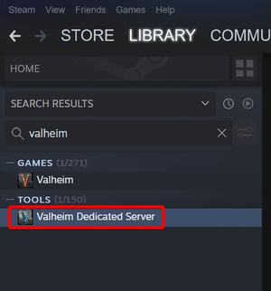
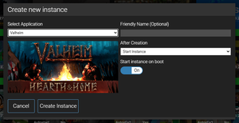
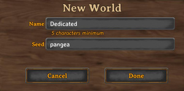

专用服务器
本站支持中英文站内搜索。带 ↗ 的链接指向外部网站；各页来源版本见页脚。
本页介绍设置和运行英灵神殿专用服务器的基础及详细信息。
概览
专用服务器负责中转RPC通信并提供远程地图数据；启用时还会在Steam服务器查询的“其他”区域公布服务器。服务器不模拟游戏逻辑，也非服务器权威架构；权威角色由客户端在各自交互的局部区域承担。不过，服务器仍执行部分权威任务：客户端连接时，通过Steam API验证Steam ID，检查封禁和许可列表，并验证密码及版本代码。
并行进程
专用服务器将部分服务放在独立子进程中，处理实时通信中转、保持地图数据一致，避免耗尽内存或相互阻塞。包括以下进程：
区域系统与DungeonDB
这两个进程相互关联，共同负责加载和生成世界数据。开始服务客户端前，两者都必须处于已启动状态。
相关输出行如下：
- Zonesystem <state> <pid>
- 从<generator>添加<num>个地点、<num>个植被、<num>个环境及<num>个生态区环境配置。
- DungeonDB <state> <pid>
- 加载世界<world name>
- 正在加载<count>个ZDO，我的ID为<num>，数据版本：<num>
- 加载<num>个已死亡ZDO
- 已移除<num>个旧版生成的ZDO
- 已加载<num>个地点
这些子进程的生命周期如下：
- Awake：脚本已加载，正在初始化
- Start：已准备好处理API调用
游戏服务器（Steam A2S）
启用时，默认即启用，游戏服务器提供A2S端口，用于获取Steam游戏服务器信息。状态以“Game server <state>”报告；“Game server connected error”表示服务器未连接到Steam连接管理服务器。可通过非官方steamstat.us检查其可用性，或查看连接日志。
Steam查询服务器的工作方式是：游戏服务器实现A2S协议[ 1 ]，向Steam主服务器注册。主服务器收到通知后，每5分钟查询A2S信息；失败时，将该服务器从列表移除。
已连接玩家计数每10分钟更新，或在有人连接、断开时更新；目前不填充玩家列表。
此子进程的生命周期如下：
- Initialized，已初始化：A2S实现已加载，并通知主服务器有新服务器，相关输出为Server ID <number>。
- Connected，已连接：主服务器已获取详细信息，并将服务器列入区域，区域硬编码为“other”。
垃圾收集器
每10分钟，服务器遍历已加载区域，移除内存中不再需要的对象。控制台以“Unloading X unused Assets/Serialized files”报告；此过程不中断中转。
相关输出行如下：
- 正在卸载X个未使用的序列化文件
- 正在卸载X个未使用的资源
世界 保存
每20分钟，服务器复制内存，再写入存储。复制期间全部中转暂停，通常约20–300毫秒；写入存储可能需要几秒。复制结束即恢复中转，存储写入在后台进行。
20分钟周期触发时，会在保存世界之前执行垃圾回收。
相关输出行如下：
- 复制<number>
- 世界已保存（<milliseconds>ms）
联网
连接方式主要有跨平台联机和直连两种，各有优缺点。
两种模式的大多数远程通信均依靠UDP。还可能与Valve或微软服务器建立TCP和UDP连接，用于服务器发现，以及连接玩家的身份识别和授权。
跨平台联机连接
跨平台联机允许英灵神殿支持的所有平台互连。服务器可根据Apple Game Center、Steam或Xbox Live身份，连接、识别、提升权限或封禁玩家。在服务器命令行添加-crossplay参数即可启用，专用服务器附带的示例启动脚本默认如此。
跨平台联机的优点是服务器网络设置简单，无需处理路由、防火墙或端口转发。服务器不直接接收玩家数据报，而通过中转服务器处理连接难题。玩家连接相同中转，RPC数据报经其往返传输。
跨平台联机有一项主要缺点：跨平台联机服务器中的玩家更容易遇到延迟、超时和断线。。额外的中转节点增加延迟、降低可靠性，也使连接更受地理位置影响。
跨平台联机的中转连接、公开服务器信息及多平台玩家身份，由Microsoft Azure PlayFab Party提供。
跨平台服务器加入流程
为找到服务器使用的中转，玩家提供数字加入代码，或服务器外部IPv4地址及游戏端口。IP与端口仅用作中转标识，服务器本地不会绑定该端口。游戏查找对应地址端口注册在哪个中转。可向玩家提供域名代替IP，但其A记录必须指向中转所见的准确外部IP。
跨平台联机没有入站监听端口，因此无法通过回环IP或局域网IP连接。
跨平台游戏中继区域
跨平台模式专用服务器会根据距离或延迟选择合适中转。截至沼泽女巫更新，可选择的微软Azure区域为：AustraliaEast、AustraliaSoutheast、BrazilSouth、CentralUs、EastAsia、EastUs、EastUs2、JapanEast、JapanWest、NorthCentralUs、NorthEurope、SouthAfricaNorth、SouthCentralUs、SoutheastAsia、UaeNorth、WestEurope、WestUs。
Steam提供的直连功能
专用服务器不含跨平台联机运行，即不添加-crossplay参数时，玩家直接连接。所有互联网路由配置由运营者负责，玩家以steamID64识别。
入站流量
服务器位于私有IPv4子网时，运营者需为游戏端口和Steam查询端口设置NAT转发，供互联网玩家访问。专用服务器不会使用UPnP或NAT-PMP自动完成。
| 端口 | 协议 | 接口绑定 | 目的 |
|---|---|---|---|
2456（或 -port 参数值）
|
UDP | 0.0.0.0和::（所有IPv4和IPv6地址） | 英灵神殿游戏RPC |
2457（或 -port 参数值+1）
|
UDP | 0.0.0.0（所有IPv4地址） | Steam查询端口（包括A2S），用于公共大厅注册元数据和服务器心跳 |
| 随机高位端口号 | TCP | 127.0.0.1（IPv4回环地址） | 供Steam库内部使用的Steamworks API，不应转发至互联网。 |
出站流量
Valve的Steamworks匹配服务用于识别、授权玩家，以及公布公开服务器。因这些操作调用Steam API，运行需互联网和DNS。会向以下域名中的IP建立出站连接：
- *.cm.steampowered.com（IP位于config/config.vdf，每次服务器启动动态更新）。
- hl2master.steampowered.com（208.64.200.39、208.64.200.52、208.64.200.65）。
这些由Steam库控制，可能改变。
IPv6
截至沼泽女巫更新，专用服务器在Linux和macOS上，会为所有网络接口绑定IPv6游戏监听端口。不过，客户端仍有一些问题，无法进行IPv6出站连接。
客户端可尝试在内核层用eBPF改写本地IPv4数据包作为变通方案。Linux、macOS或Windows也可用socat构建用户态方案：
socat UDP4-LISTEN:12456,su=nobody UDP6:[2603:8080:1500:1a3e:4183:d152:6b93:4f06]:2456
此例中，游戏可连接127.0.0.1:12456，经隧道转至服务器[2603:8080:1500:1a3e:4183:d152:6b93:4f06]:2456。
专用服务器无法在较罕见的纯IPv6网络运行，因为服务器使用Steamworks API时，连接Valve服务器仍需要部分IPv4出站能力。
处理运营商级地址转换（CGNAT）
真实互联网IPv4地址成本上升，许多运营商将用户放在内部网络，通过少量公网IPv4访问互联网。同一运营商的多个用户共享外部IP。维基百科上的运营商级地址转换
运营商级地址转换会给服务器运营者带来以下困难：
- 运营商NAT路由器无法像家用或办公路由器那样按需转发端口，因此阻止互联网直连专用服务器。
- 跨平台联机使用中转，因此仍可连接。但若同一运营商另一用户以相同外部IP和游戏端口托管英灵神殿，首次向Azure PlayFab Party注册会失败。选择不同端口可绕过问题。
判断运营商是否使用CGNAT，可记录路由器从运营商获取的WAN IPv4，再将该WAN IPv4与https://www.whatismyip.com/等网站显示的外部IP比较。若路由器地址以100开头，或与外部IP不同，运营商很可能使用CGNAT。
部分CGNAT运营商允许联系支持申请真实外部IPv4，绕开CGNAT；其他提供付费静态IP或家庭转商务服务。未来，服务器的IPv4位于CGNAT后方时，IPv6可能提供更容易的互联网直连方式。
要求
专用服务器支持Linux、macOS和Windows操作系统，可通过Steam安装，在库中列为“工具”，或使用命令行版本SteamCMD。Apple App Store版英灵神殿已内置专用服务器。
以下要求为非官方信息，但代表普遍共识。低于所列配置也可能运行。性能取决于初始设置、系统或发行版、玩家人数及模组。模组服务器需更好硬件，推荐配置涵盖多数情况。
| 最低 | 建议 | |
|---|---|---|
| 处理器 | 四核处理器（4个核心） | 六核处理器（6个核心） |
| CPU 频率 | 2.8千兆赫 | 3.4 GHz+ |
| 内存 | 2 GB | 4 GB+ |
| 存储空间 | 2 GB | 4 GB+ |
世界生成消耗较多CPU，包括初次生成及探索新区域时生成。有人进入新区域，服务器会即时生成，探索期间CPU负载可能很高；其余时间CPU需求较少。
世界生成后加载至内存，因此服务器较耗内存。新世界通常约1.8–2.4 GB，每个有活跃玩家的加载区域约100–300 MB；高对象数量区域可能需求更多。
设置


下述指南用于托管专用服务器。也可在客户端加载世界时选择“启动服务器”，使用内置托管。区别是客户端退出后服务器关闭，而专用服务器只要程序仍运行、网络连接存在，就会持续运行。
自动设置
Docker
服务器运行Docker时，可在Docker Hub找到社区镜像。原文所述当时尚无官方专用服务器Docker镜像。
| 镜像 | 特征 | 拉取次数 |
|---|---|---|
| lloesche/valheim-server |
|
超过10百万次 |
| mbround18/valheim |
|
超过5百万次 |
| pfeiffermax/valheim-dedicated-server |
|
100k |
通过AMP自动安装


AMP是可在个人电脑或服务器运行的常用游戏服务器管理面板，支持英灵神殿，可通过网页简化部署，支持Windows和Linux。参阅YouTube上的视频教学。AMP是商业软件，一次性价格约$10美元起，可管理最多5个游戏服务器实例，并免费终身更新。
AMP运行后，参阅教学与指南，点击“Create Instance（创建实例）”，从游戏列表选择“Valheim”，再点击“Create Instance”。
随后双击新实例管理，在状态界面选择“Update（更新）”，下载服务器及必需文件。
下载完成后点击“Start（启动）”，稍等服务器启动。启动完成即可正常连接。
手动配置
步骤1：下载服务器文件
Windows
- 创建用于安装英灵神殿专用服务器的文件夹。
- 下载 SteamCMD 放入该文件夹
- 创建批处理文件，命名为
InstallUpdate.bat - 在批处理文件中写入以下代码：@echo off steamcmd.exe +force_install_dir "C:\Your\Valheim\Folder" +login anonymous +app_update 896660 -beta public validate +quit :5. 右键点击InstallUpdate.bat，选择以管理员身份运行。
- 6. 游戏服务器文件将下载至批处理文件中指定的文件夹路径
Linux
- 创建用于安装英灵神殿专用服务器的文件夹。
- 安装 SteamCMD
- 创建名为InstallUpdate.sh的英灵神殿安装及验证脚本。
- 在脚本中写入以下代码，并修改路径。
#!/bin/sh
steamcmd +@sSteamCmdForcePlatformType linux +force_install_dir /path/to/server +login anonymous +app_update 896660 -beta public validate +quit
- 5. 将此脚本设为可执行
sudo chmod +x /path/to/script
- 6. 为连接PlayFab并启用跨平台联机，还必须安装若干依赖项。
sudo apt update && sudo apt install -y libpulse-dev libatomic1 libc6
- 7. 运行脚本进行安装。英灵神殿每次更新后，都要再次运行此脚本。
步骤2：配置英灵神殿专用服务器
Windows
- 在步骤1的服务器文件夹中创建StartServer.bat批处理文件。
- 在此批处理文件中写入以下代码：
@echo off
set SteamAppId=892970
echo "Starting server PRESS CTRL-C to exit"
valheim_server.exe -nographics -batchmode -name "YourWorldName" -port 2456 -world "YourWorldFilename" -password "YourPassword" -public 1
StartServer.bat ，选择以管理员身份运行以启动服务器
Linux
- 在英灵神殿安装目录创建valheim.sh脚本。
- 在此脚本中写入以下代码：
#!/bin/sh
export templdpath=$LD_LIBRARY_PATH
export LD_LIBRARY_PATH=./linux64:$LD_LIBRARY_PATH
export SteamAppID=892970
echo "Starting server PRESS CTRL-C to exit"
./valheim_server.x86_64 -name "<servername>" -port 2456 -nographics -batchmode -world "<worldname>" -password "<serverpassword>" -public 1
export LD_LIBRARY_PATH=$templdpath
- 3. 保存并运行此脚本以启动服务器
步骤3：端口转发与远程访问
在Windows防火墙添加入站规则，允许UDP游戏端口2456及Steam查询端口2457。
可能还需在路由器添加转发规则，可参阅PortForward.com了解方法。
连接中
手动
- 启动英灵神殿
- 选择角色
- 在选择世界窗口，选择顶部附近的“加入游戏”选项卡。
- 在社区服务器列表找到自己的服务器并连接，或……
- 选择“加入IP”
- 输入服务器IP地址和已转发的端口
- 若游戏与服务器运行在同一电脑，使用127.0.0.1:2456。
- 若游戏和服务器分别运行于两台电脑，使用服务器电脑的局域网IP。通常以192.168开头，可在路由器已连接设备列表找到，例如192.168.0.2:2456。
- 连接他人服务器时，可在游戏服务器浏览器寻找名称，或由服主提供公网IP和转发端口。服主可访问https://whatismyipaddress.com/选择IPv4地址，或搜索“my IP”获取公网地址。
- 选择“连接”
- 输入服务器密码
半自动
也可使用Steam协议设置连接链接。
steam://connect
格式如下： steam://connect/<fqdn/ip>[:<port>]
此链接要求A2S端口运行，默认2457。它让Steam连接服务器，在游戏外提示密码，再启动游戏，之后仍需再次输入。只有游戏内密码框有效，游戏尚不识别Steam窗口的密码输入，因此无需在那里输入。
默认使用:27015端口，因此将:2457转发到它后，可省略端口部分。
示例 steam://connect/valheim-server.example.com:2457
steam://run
所需格式为：steam://run/%2Bconnect%20<fqdn/ip>[%3A<port>]。
此链接让英灵神殿直接连接服务器，即使未启用A2S端口，即-public 0，也有效。多数无法正确控制嵌入链接的地方，需要%字符，它会转换为运行参数“+connect <fqdn/ip>[:port]”。
示例：steam://run/%2Bconnect%20valheim-server.example.com%3A2456。
额外配置
管理员、封禁与白名单
服主可使用%UserProfile%\AppData\LocalLow\IronGate\Valheim.中的permittedlist.txt、bannedlist.txt和adminlist.txt，设置用户白名单、封禁及管理员。
每个文件使用用户的steamID64准确识别Steam账号，可用以下方法找到：
- 在自己的服务器游戏中按F2，显示已连接玩家及steamID64。
- 使用steamid.io等第三方（3rd party）工具，根据玩家名称查找steamID64。
- 服务器控制台会显示使用steamID64的客户端和玩家“会话请求”。
管理员只能使用踢出、封禁等专用控制台命令管理服务器，不会获得作弊或debugmode等其他命令权限。要设为管理员，可按上述方法找到自己的steamID64并加入adminlist.txt。
例如，若你的steamID64为“1234567890123456”，文件应如下所示：// List admin players ID ONE per line 1234567890123456确保每行都没有空白字符或注释，因为系统会将整行作为一个整体读取！
指定种子 & 位置的世界 保存数据


原文所述服务器会创建随机种子，名称取自上述start_headless_server.bat文件的-world参数。若要使用特定种子，需先在客户端创建世界，再上传所需文件。
- 在单人模式下使用独特的世界名称创建指定种子的世界。例如，
- 名称：“Dedicated”
- 种子: “pangea”
- 至少进入新世界一次，让游戏创建必需文件。
- 在复制的start_headless_server.bat中，将-world参数改为所选世界名称，而非种子名称。此例为“Dedicated”。
要找到存档目录，进入以下文件夹之一：
%userprofile%/AppData/LocalLow/IronGate/Valheim/worlds若使用云存档
本地存档位于%userprofile%/AppData/LocalLow/IronGate//Valheim/worlds_local。
Linux用户请进入以下目录之一：
$HOME/.config/unity3d/IronGate/Valheim/worlds若使用云存档$HOME/.config/unity3d/IronGate/Valheim/worlds_local若使用本地存档
每个世界有以其名称命名的文件夹，包含该世界全部文件和已发生的改动。
1.0发布时改变了此架构；此前每个世界仅有两个文件，直接放在上述目录。
服务器日志文件位置
Linux
连接日志位于/home/your-username/.steam/logs。
- 1. 英灵神殿服务器的连接日志命名为
connection_log_2456.txt- 2456是服务器监听的端口号（
2456为默认值）
- 2456是服务器监听的端口号（
要保存服务器日志，需编辑valheim.sh文件，或自己命名的服务器启动脚本。
- 2. 打开你的
valheim.sh文件，使用任意文本编辑器 - 3. 在以下内容开头的行中：
./valheim_server.x86_64，追加以下内容：
>> /tmp/valheim_log.txt < /dev/null &
#!/bin/sh
export templdpath=$LD_LIBRARY_PATH
export LD_LIBRARY_PATH=./linux64:$LD_LIBRARY_PATH
export SteamAppID=892970
echo "Starting server PRESS CTRL-C to exit"
./valheim_server.x86_64 -name "<servername>" -port 2456 <-nographics> <-batchmode> -world "<worldname>" -password "<serverpassword" -public 1 >> /tmp/valheim_log.txt < /dev/null &
export LD_LIBRARY_PATH=$templdpath
- >> /tmp/valheim_log.txt会让Linux将标准输出追加到此文本文件。
< /dev/null &用于立即向程序发送EOF（文件结束信号），使其无需等待输入- /dev/null是空设备特殊文件，会丢弃写入的所有数据，但报告写入成功；读取时不返回数据，立即报告文件结束。
- &是特殊命令分隔符，使前一个进程在后台运行。参考
更新
每次游戏更新，也需更新专用服务器。版本不一致时玩家无法连接。较新更新中，只需在Steam更新专用服务器工具，无需第三方工具。
备份和转移世界
Linux：：世界存放在~/.config/unity3d/IronGate/Valheim/worlds_local。
macOS：：世界存放在~/Library/Application Support/IronGate/Valheim/worlds_local。
Windows：：世界存放在%UserProfile%\AppData\LocalLow\IronGate\Valheim\worlds_local。
上述文件夹由专用服务器工具及游戏自身共同使用，可交替用专用服务器或游戏托管，但不建议同时运行同一世界，可能发生严重错误。
每个世界在worlds_local内有独立文件夹，以世界名称命名。
备份或转移世界时，必须保留其文件夹内全部文件。
1.0更新改变此架构，只写入发生变化区域的文件，加快世界保存。
Steam云同步交互
启用Steam云后，退出游戏会自动上传AppData中“worlds”文件夹的全部文件。可在其内放备份子文件夹，也会被云备份。可在此手动下载云文件：https://store.steampowered.com/account/remotestorage
启动游戏时，Steam云也会自动将云端“worlds”全部文件下载到AppData。若提示文件不一致，建议在备份两份数据之前不要点击任何按钮，否则备份不当可能使世界无法挽回的断裂。
经常问的问题
为什么服务器会出现延迟？
服务器无响应通常有两种情况：
- 被分配为区域主控的客户端无法胜任。该角色对CPU并行能力要求高；若客户端线程处理不佳，或后台任务已过载，所有人都会发现开箱、开门、建筑倒塌、树木倒下等动作延迟。可让性能较好的玩家先进入区域，或让当前主控迅速离开再返回，重新分配角色。
- 世界保存复制内存较慢，每20分钟发生，游戏会预先提示，容易识别。没有直接变通方案，但避免队伍分散同时加载多个区域，以及为服务器配更快内存和CPU，可减轻问题。
部分资料认为带宽受限，但通常不是主要问题，或属于难更换的硬件问题。区域主控需处理大量UDP数据包，除CPU限制，也可能遇到网络硬件能力不足。客户端通常尚可，专用服务器的数据包负载却是单个客户端的多倍。部分模组通过压缩或合并数据包缓解，但根本方法是在更强环境托管。
为什么会发生不同步？
这是延迟问题的延伸：客户端有时已从服务器状态脱节，却仍显示连接并继续操作。多人看到区域状态不同时较容易发现，单人则很难。通常应重新连接；若出现过这种情况，之后需留意相关症状。
我的进度回退了，该怎么办？
进度丢失部分源于前述不同步，也可能是错误关闭服务器。若强制终止后丢失进度，容易识别。预防方式是向进程发送INT或TERM，正确关闭，而非强行终止。Windows可在命令窗口按Ctrl+C，并用Y确认；Linux可在终端按Ctrl+C、发送正确信号，或让进程管理器使用SIGINT或SIGTERM并留足等待时间。丢失进度无法恢复，因为它要么从未到达服务器，要么未保存内存状态而丢失。
截至沼泽女巫更新，Unity的一个缺陷使macOS专用服务器即使收到SIGINT或SIGTERM也无法正常关闭。在macOS专用服务器上，只有手动请求保存或定期自动保存，才会将最近的世界变更写入磁盘。。
参考资料
| 攻略 | |
|---|---|
| 玩家 | |
| 战斗 | |
| 生成 | |
| 建材 | |
| 界面 | |
| 世界 | |
| 杂项 | |
| 开发 | |
This page shows basics and details on how to set up and operate a Valheim dedicated server.
Overview
The dedicated server is responsible for relaying RPC communication and providing remote map data, when enabled, advertising the server in the Steam Server Query (in the “other” region). The server does not simulate any of the game logic—it is not server-side authoritative. The authority role is claimed by the clients on locally isolated areas they interact with. However, the server will do some authoritative jobs; when a client connects, it validates Steam IDs using the Steam API, checks its banned and permitted lists, and validates a password and version code.
Parallel processes
The dedicated server runs a few services into their own sub-process to be able to serve the RTC relay keep the map data consistent without consuming all the memory and not block each of the tasks. These processes are the following:
Zonesystem & DungeonDB
These two are interconnected, both responsible for loading and generating world data. These two need to be in a started state before serving any clients.
Related output lines are:
- Zonesystem <state> <pid>
- Added <num> locations, <num> vegetations, <num> environment, <num> biome env setups from <generator>
- DungeonDB <state> <pid>
- Load world <world name>
- Loading <count> zdos, my id <num> data version:<num>
- Loaded <num> dead zdos
- Removed <num> OLD generated ZDOS
- Loaded <num> locations
The lifecycle of these sub-processes are:
- Awake: Script is loaded, and initializing
- Start: Ready to serve API calls
Game server (Steam A2S)
When enabled (which it is by default), the Game server will provide an A2S port that is used to get server information for Steam games. The state is reported with “Game server <state>“ and “Game server connected error” where the latter is and indication of the server not reaching the Steam Connection Manager servers; Check their availability through steamstat.us (unofficial), or alternatively look for the connection log.
The way Steam Query Servers work is that the Game server provides an implementation of the A2S protocol[1], and will register itself with the Steam Master Servers. Once notified, the Master Server will query for an A2S information every 5 minutes, and when fails, it will remove the server from its list.
The connected player counter is updated every 10 minutes or when someone connects/disconnects, however the player list is not populated at the moment.
The lifecycle of this sub-process is:
- Initialized: The A2S implementation is loaded and Master Servers were notified for a new server (related output: Server ID <number>)
- Connected: Master Server fetched the server details and now listing the server in the region (hardcoded to “other”)
Garbage collector
Every 10 minutes, the server will go through the loaded areas and remove anything that is no longer needed in memory. This is reported by “Unloading X unused Assets/Serialized files” lines in the console. The relay is not paused while this is running.
Related Output lines are:
- Unloading X unused Serialized files
- Unloading X unused Assets
World Save
Every 20 minutes, the server will clone the memory and then write it to the storage. While the memory cloning is on-going, all relay operations are on hold. This usually takes around 20–300 ms, while the storage writing can take up to a few seconds. Relay operations are continued right after the memory clone is done, and the storage operation runs in the background.
When the 20-minute cycle happens, the Garbage Collection is triggered before a world save!
Related output lines are:
- clone <number>
- World saved ( <milliseconds>ms )
Networking
There are two general modes of connectivity, each with benefits and disadvantages: Crossplay and direct.
The server relies on UDP for most remote communication in either mode. Both TCP and UDP communication may be established with Valve or Microsoft servers to facilitate server discovery as well as identification and authorization of incoming players.
Crossplay Connectivity
Crossplay enables connectivity between all platforms supported by Valheim. A Crossplay-enabled server can connect, identify, elevate or ban players using their Apple Game Center, Steam or Xbox Live identities. Crossplay is engaged by adding the -crossplay argument to the server command line. This is the default in the example launch scripts that ship with the dedicated server.
Crossplay has the advantage of simpler networking setup for the server operator. They don't need to think about routing, firewalls, or port forwarding. The server doesn't accept datagrams directly from players. Instead, it handles the difficult aspects of connectivity by communicating with a relay server. Players communicate with the same relay and their RPC datagrams are relayed to/from the server over this relay.
Crossplay has a major disadvantage: players on a Crossplay server are more likely to experience lag, timeouts and disconnects. The extra hop of a relay server increases latency and decreases reliability. It also makes connectivity more geographically-sensitive.
The relayed connectivity, public server advertising, and multi-platform player identities of Crossplay are powered by Microsoft Azure PlayFab Party.
Crossplay Server Join Process
In order to find the relay a server is using, players supply Valheim with a numeric Join Code or they supply the external IPv4 address and gameplay port of the server. The IP address and port are just used as identifiers for a relay and no port binding is made on the server locally. Valheim finds which relay that IP address/port is registered to. A domain name may be given to players in lieu of an IP address, but it must lead to an A record of the exact external IP address the relay sees for the server.
Because there are no inbound listening ports in Crossplay, players can't connect using a loopback IP address or LAN IP address in this mode.
Crossplay Relay Regions
A Valheim Dedicated server in Crossplay mode will determine an adequate relay server to communicate with based on proximity or latency. Relay servers are chosen within these Microsoft Azure cloud regions as of the Bog Witch update: AustraliaEast, AustraliaSoutheast, BrazilSouth, CentralUs, EastAsia, EastUs, EastUs2, JapanEast, JapanWest, NorthCentralUs, NorthEurope, SouthAfricaNorth, SouthCentralUs, SoutheastAsia, UaeNorth, WestEurope, WestUs
Steam-facilitated Direct Connectivity
When the dedicated server is run without Crossplay (no -crossplay argument), players connect directly to the server. All aspects of Internet routing are left up to the server operator. Players are identified to the server by their steamID64.
Ingress
If the server is on a private IPv4 subnet, the server operator would need to set up NAT port forwarding for the gameplay port and Steam query port in order to be accessible to players over the Internet. Valheim Dedicated Server does not use UPnP or NAT-PMP to automate the process.
| Port | Protocol | Interface Binding | Purpose |
|---|---|---|---|
2456 (or -port value)
|
UDP | 0.0.0.0 and :: (all IPv4 and IPv6) | Valheim Gameplay RPC |
2457 (or -port value +1)
|
UDP | 0.0.0.0 (all IPv4) | Steam Query Port (including A2S) for public lobby registration metadata and server heartbeat |
| Random high number | TCP | 127.0.0.1 (IPv4 loopback) | Steamworks API for internal Steam library use. Should not be forwarded to the Internet. |
Egress
Valve's Steamworks Matchmaking services are used to identify and authorize players as well as to advertise the server if it's public. Internet access and DNS are required to run the server as Steam APIs are called for these operations. Outbound connections are made to IPs in these domains:
- *.cm.steampowered.com (IPs in config/config.vdf, dynamically updated with each server start)
- hl2master.steampowered.com (208.64.200.39, 208.64.200.52, 208.64.200.65)
These are controlled by Steam libraries and are subject to change.
IPv6
As of the Bog Witch update, the dedicated server binds the gameplay listening port for IPv6 for all interfaces on Linux and macOS. Unfortunately, the game client has a few outstanding issues preventing outbound IPv6 connectivity.
A kernel-space workaround for clients might be crafted by rewriting local IPv4 packets using eBPF. A userspace workaround could also be constructed on Linux, macOS or Windows using the socat utility:
socat UDP4-LISTEN:12456,su=nobody UDP6:[2603:8080:1500:1a3e:4183:d152:6b93:4f06]:2456
in this example, the game can connect to 127.0.0.1:12456 and is tunneled to the server at [2603:8080:1500:1a3e:4183:d152:6b93:4f06]:2456.
Valheim Dedicated Server will not operate in IPv6-only networks (rare) as some outbound IPv4 connectivity is required to connect to Valve's servers for Steamworks APIs used by the server.
Working with Carrier-grade NAT (CGNAT)
Due to the rising cost of real Internet IPv4 addresses, many ISPs group customers into internal networks that route those customers to the Internet through a small number of public IPv4 addresses. Customers in this situation share an external IP address with several other customers of the same carrier (ISP). Carrier-grade NAT on Wikipedia
A carrier-grade NAT poses challenges to a server operator:
- The carrier's NAT router does not forward ports on-demand like a home or office NAT router might be able to. This prevents direct connectivity to the dedicated server over the Internet.
- Crossplay will work thanks to the use of relays, but initial registration of the server with Azure PlayFab Party will fail if another customer of the same ISP is hosting Valheim on the same external IP address and gameplay port. This can be worked around by choosing a unique port.
To determine if your ISP uses CGNAT, take note of the WAN IPv4 address your router reports receiving from the ISP. Compare the router-reported WAN IPv4 address with the external IP address reported by a site like https://www.whatismyip.com/. If the router-reported address starts with 100 or the router-reported address doesn't match the external IP address, then your ISP likely employs CGNAT.
Some CGNAT ISPs will allow customers to opt-in to real external IPv4 addresses (avoiding CGNAT) with a call to Support. Others offer a paid upgrade by means of a paid "Static IP" feature or a paid upgrade from residential to business class of service. In the future, IPv6 may provide an easier direct route to a server from the Internet when a server is behind CGNAT for IPv4.
Requirements
The dedicated server is available for the Linux, macOS, and Windows operating systems. It can be installed using the Steam application (where it is listed in the user's library as a "tool"), or its command line sibling SteamCMD. The Apple App Store version of Valheim includes the dedicated server bundled within.
The following requirements are unofficial, but are the general consensus. It may still be able to run a dedicated server using less than the listed requirements. Server performance depends on your initial setup, distro/os selection, the number of players and whether you use mods. Modded Valheim Servers will require better hardware. The recommended settings will cover most instances.
| Minimum | Recommended | |
|---|---|---|
| CPU | Quad-Core Processor (4 Cores) | Hexa-Core Processor (6 Cores) |
| CPU Frequency | 2.8 GHz | 3.4 GHz+ |
| RAM | 2 GB | 4 GB+ |
| Storage | 2 GB | 4 GB+ |
World generation is CPU-heavy. This includes initial world generation and generation as new parts of the world are explored. Whenever someone enters a new area, the server will generate that on the fly—at times of exploration the CPU load can be demanding. Besides that, the server uses few CPU resources.
Once the world is generated, it will be loaded into memory, so the server is memory intensive. In general, a fresh world usually uses around 1.8–2.4 GB of RAM, each loaded areas (where players are active) take around 100–300 MB, but high-instance areas could demand a lot more.
Setup
The guide below is for hosting a dedicated server. You can also play using the built-in server hosting in the Valheim client by selecting the “Start Server” radio button when loading your world. The difference between using the client to host and the dedicated server option is that the server will shut down when you exit the client, but a dedicated server will stay on so long as the program is running and there is an internet connection.
Automated Setup
Docker
If your server is running Docker, you can find community images on Docker Hub. At the time there is no official docker image for Valheim dedicated server available.
| Image | Features | Pulls |
|---|---|---|
| lloesche/valheim-server |
|
over 10 million |
| mbround18/valheim |
|
over 5 million |
| pfeiffermax/valheim-dedicated-server |
|
100k |
Automated Installation via AMP
AMP is a popular game server management panel you can run on your own PC/server that supports Valheim and makes it easier to get the server going from its web interface. You can run it on both Windows and Linux. See the Video Tutorial on YouTube. AMP is commercial software, starting at approximately $10 USD as a one-time cost for up to 5 game server instances and free lifetime updates.
Once you have AMP itself up and running (Tutorial and Guide), click "Create Instance" and then select "Valheim" from the list of games. Once you've done that, select "Create Instance".
After that, double click the new Valheim instance to manage it and select "Update" from the status screen. This will download the Valheim server and required files.
Once the download is complete you can hit Start and after a few moments the server will start up. Once the startup has completed you can connect as normal.
Manual Setup
Step 1: Download the Server files
Windows
- Create a folder where you wish to install your Valheim dedicated server
- Download SteamCMD into that folder
- Create a batch file named
InstallUpdate.bat - Place the following code in this batch file::5. Right-click
@echo off steamcmd.exe +force_install_dir "C:\Your\Valheim\Folder" +login anonymous +app_update 896660 -beta public validate +quit
InstallUpdate.batand Run as Administrator
- 6. Your game server files will be downloaded into the folder path used in the batch file
Linux
- Create a folder where you wish to install your Valheim dedicated server
- Install SteamCMD
- Create a Valheim install and validate script named
InstallUpdate.sh - Place the following code in this script (make sure you edit the path)
#!/bin/sh
steamcmd +@sSteamCmdForcePlatformType linux +force_install_dir /path/to/server +login anonymous +app_update 896660 -beta public validate +quit
- 5. Make this script executable
sudo chmod +x /path/to/script
- 6. To be able to connect to PlayFab, and enable crossplay, you must also install several dependencies.
sudo apt update && sudo apt install -y libpulse-dev libatomic1 libc6
- 7. Run the script to install. Whenever Valheim is updated, run this script again.
Step 2: Setting up a Valheim Dedicated Server
Windows
- Create a batch file named
StartServer.batin your Valheim server folder from Step 1 - Place the following code in this batch file:
@echo off
set SteamAppId=892970
echo "Starting server PRESS CTRL-C to exit"
valheim_server.exe -nographics -batchmode -name "YourWorldName" -port 2456 -world "YourWorldFilename" -password "YourPassword" -public 1
StartServer.bat and Run as Administrator to start your server
Linux
- Create a script named
valheim.shin your Valheim install directory - Place the following code in this script
#!/bin/sh
export templdpath=$LD_LIBRARY_PATH
export LD_LIBRARY_PATH=./linux64:$LD_LIBRARY_PATH
export SteamAppID=892970
echo "Starting server PRESS CTRL-C to exit"
./valheim_server.x86_64 -name "<servername>" -port 2456 -nographics -batchmode -world "<worldname>" -password "<serverpassword>" -public 1
export LD_LIBRARY_PATH=$templdpath
- 3. Save and run this script to start the server
Step 3: Port Forwarding / Remote Access
Add an incoming rule to your Windows Firewall to allow UDP port (game port) 2456, (Steam query port) 2457.
You may additionally need to add a forwarding rule to your network router. You can use PortForward.com to read how to do this.
Connecting
Manually
- Start Valheim
- Select your character
- From the select world window, select the "Join Game" tab near the top
- Find your server's name in the Community servers list and connect to it, or...
- Select “Join IP”
- Enter the server IP and forwarded port
- If you’re playing the game on the same computer you are hosting the server on, use 127.0.0.1:2456
- If you’re playing the game and hosting it on two different computers, use the LAN (local) IP of the server computer. This usually starts with 192.168 and can be found in your router’s list of connected devices. (Example: 192.168.0.2:2456)
- If you’re connecting to someone else’s server, you may find their server name in the in-game server browser. Or, the host will need to provide the public IP and forwarded port. The host can discover their public IP by visiting https://whatismyipaddress.com/ and selecting the IPv4 address or by Googling “my IP”
- Select “Connect”
- Enter the server password
Semi-Automated
Alternatively, you can set up links by using the Steam protocol.
steam://connect
The format for this is: steam://connect/<fqdn/ip>[:<port>]
This link requires that the A2S port is running (2457 by default). It tells Steam to connect to a server—it will prompt the password input outside of Valheim, launch Valheim and you will need to type your password again. The in-game password field is the only one that works, the Steam window field is not recognised by the game yet, so you can’t type anything there.
By default this uses :27015 port, so if you forward your :2457 port to that, you can omit the port section.
Example: steam://connect/valheim-server.example.com:2457
steam://run
The format you would need to use is: steam://run/%2Bconnect%20<fqdn/ip>[%3A<port>]
This link will instruct Valheim to connect to a server directly—it works even when the A2S port is not enabled (-public 0). The % characters are needed for most places where you cannot control the embed link correctly—it will translate to the runtime arguments: “+connect <fqdn/ip>[:port]”
Example: steam://run/%2Bconnect%20valheim-server.example.com%3A2456
Additional configuration
Admins, bans, and whitelist
Server hosts are able to whitelist, ban, and make an admin of any users with the permittedlist.txt, bannedlist.txt, and adminlist.txt files located in %UserProfile%\AppData\LocalLow\IronGate\Valheim.
Each file uses the steamID64 of a user to accurately identify their Steam account. This number can be found in several ways:
- While in-game on your server, press F2 to bring up a menu that will show you connected players and their steamID64
- Use a 3rd party tool like steamid.io to find a player's steamID64 using their name
- In the server console, you will see clients and "session requests" from players using their steamID64's
Being an admin allows only the use of admin-specific Console Commands to manage your server (kick, ban, etc). It does not give access to any other commands such as cheats or debugmode. To make yourself an admin on your server, find your steamID64 using one of the above steps and add it to the adminlist.txt.
For example, if your steamID64 is “1234567890123456”, the file should look like the following:// List admin players ID ONE per line 1234567890123456Make sure there is no whitespace or comments in any lines, each line is read as a whole!
Specifying seed & location of World Save Data
Currently, the server will create a random seed and give it the name you specify in the -world parameter of the start_headless_server.bat file detailed above, so if you want to host a server with a specific seed, you will need to use a workaround by creating the world by the client and uploading the required files.
- Create the seed in singleplayer using a unique world name. For example,
- Name: “Dedicated”
- Seed: “pangea”
- Make sure to start this new world at least once to get the game to create the necessary files
- Change the -world parameter in your copied start_headless_server.bat to your chosen world name (not the seed name). In this example, “Dedicated”
To locate your save folder, navigate to one of these folders:
%userprofile%/AppData/LocalLow/IronGate/Valheim/worldsif using cloud saves
%userprofile%/AppData/LocalLow/IronGate//Valheim/worlds_local if using local saves
For linux, navigate to one of these directories:
$HOME/.config/unity3d/IronGate/Valheim/worldsif using cloud saves$HOME/.config/unity3d/IronGate/Valheim/worlds_localis using local saves
There will be a folder for each world named for the world. This folder contains all of the files for the world and any changes that have been made to the world.
This architecture was changed with the 1.0 release from the previous architecture which saw only two files for each world and which saw those files placed directly into the directories above.
Location of Server Log Files
Linux
Connection logs are located under /home/your-username/.steam/logs
- 1. Connection logs for the Valheim server are named
connection_log_2456.txt- 2456 is the port number your server is listening on (
2456is the default value)
- 2456 is the port number your server is listening on (
Server logs require you to edit the valheim.sh-file (or whatever name you called your script to start the server) in order to be saved.
- 2. Open your
valheim.sh-file in any text editor - 3. On the line starting with
./valheim_server.x86_64, append the following:
>> /tmp/valheim_log.txt < /dev/null &
#!/bin/sh
export templdpath=$LD_LIBRARY_PATH
export LD_LIBRARY_PATH=./linux64:$LD_LIBRARY_PATH
export SteamAppID=892970
echo "Starting server PRESS CTRL-C to exit"
./valheim_server.x86_64 -name "<servername>" -port 2456 <-nographics> <-batchmode> -world "<worldname>" -password "<serverpassword" -public 1 >> /tmp/valheim_log.txt < /dev/null &
export LD_LIBRARY_PATH=$templdpath
>> /tmp/valheim_log.txttells the linux kernel to pipe anything received onstdoutto this text file instead.< /dev/null &is used to instantly send EOF(End of File) to the program, so that it doesn't wait for input/dev/null, the null device, is a special file that discards all data written to it, but reports that the write operation succeeded, and provides no data to any process that reads from it, yielding EOF immediately.&is a special type of command separator used to background the preceding process. ref
Updating
Every time the game updates, you will also need to update your dedicated server. If the dedicated server version does not match the game version then players cannot connect. It is sufficient (in recent patches) simply to update the Valheim Dedicated Server tool in Steam—no need to use third-party tools.
Backups and transferring worlds
Linux: Your worlds are stored in ~/.config/unity3d/IronGate/Valheim/worlds_local
macOS: Your worlds are stored in ~/Library/Application Support/IronGate/Valheim/worlds_local
Windows: Your worlds are stored in %UserProfile%\AppData\LocalLow\IronGate\Valheim\worlds_local
The above folder is used by the dedicated server tool and the Valheim game’s own system. You can interchangeably choose to play using the dedicated server or the game hosting. It is not suggested to do this simultaneously with the same world—critical errors may occur.
Each world is contained in its own folder within the worlds_local folder; this folder is named after the world.
All of the files in the folder for a world are required if you wish to backup or transfer the world.
This architecture was changed with the 1.0 update to facilitate faster world saves as only the files for areas that have been changed are written to.
Steam Cloud interaction
Steam Cloud (if enabled) will automatically upload all of the files in the “worlds” folder in AppData to the Steam Cloud when you exit Valheim. You can place a backup subfolder in the worlds folder which will then be backed up using Steam Cloud. You can manually download Steam Cloud files here: https://store.steampowered.com/account/remotestorage
Steam Cloud will also automatically download all files from the “worlds” folder in Steam Cloud to your AppData folder when you open Valheim. I suggest that if you receive a message that there is a file mismatch, do not click any button until you have backed up both sets of files—this can lead to your world becoming irretrievably broken if you did not back up properly.
Frequently asked questions
Why does the server lag happen?
There are two common cases for a server to be unresponsive:
- The client who got assigned to be the chunk-master, the host for an area, cannot fulfill that duty properly. The role is a CPU-heavy duty in terms of parallelism, if the client who connected does not handle threads well, or already overloaded with many background tasks, then everyone will see delays in their actions like accessing chests, opening doors, seeing buildings crumble or trees fall. A workaround is to make the players who can handle this job go first in an area, or reassign the role by asking the current chunk-master to quickly leave the area and re-enter.
- World Save is slow to clone the memory. This happens every 20 minutes, and the game announces it before it happens, so it is much easier to identify. There is no workaround for this, but you can ease the problem by not splitting up your group to load many areas at once, and have a faster memory and CPU combination on the server to speed up the cloning process.
Some sources also point at the server being bandwidth-limited. That is usually not a problem, or a problem of hardware that would be hard to replace. The thing is that the host, the chunk-master will need to handle many UDP packets, and outside of the host hardware CPU limitations, you can run into networking hardware not capable for the server side. Clients are usually fine, but the dedicated server will have multiple times the load of a single client in terms of packet counts. Some mods do try to combat this by either compressing the sent packets or grouping them, but the real solution is to host your server in a more capable environment.
Why does desync happen?
This is an extension to the Lag problem, sometimes it can happen that the clients are dropped out from the server but still connected and doing things. While in a group this can be recognized much more easily when two players see different states of an area, but when you play alone this is really hard to recognize. Typically, what you want to do is to reconnect to the server, and once you see this happening with your connection, you just have to look out for indications of the symptoms.
My progress got reverted, what can I do?
This is partially the previous desync problem, and another common mistake by shutting down the server incorrectly. The shutdown progression loss can be easily recognized as it happens after you kill your server. The way to prevent is to correctly shutdown your server by sending an INT or TERM signal to it instead of aborting or killing the process. On Windows, this can be achieved by sending a Ctrl+C and accepting with a Y to the command window. On Linux, Ctrl+C can be used in a terminal shell or send the right signal to the process or set up your process supervisor to use SIGINT or SIGTERM with an appropriate wait time. As for restoring progress, you have no options, as it either never existed on the server or got lost by not saving the memory state.
As of the Bog Witch update, a Unity bug prevents the macOS dedicated server from entering graceful shutdown even if SIGINT or SIGTERM is used. Only manual save requests or the regular save interval will result in recent world changes being flushed to disk on macOS dedicated server.
References
| Guides | |
|---|---|
| Player | Player • Health • Stamina • Eitr • Adrenaline • Death • Forsaken power • Skills • Status effects • Movement speed • Magic • Fishing • Riding • Sleeping • Emotes |
| Combat | |
| Spawning | |
| Building | |
| UI | |
| World | |
| Misc | |
| Development | |